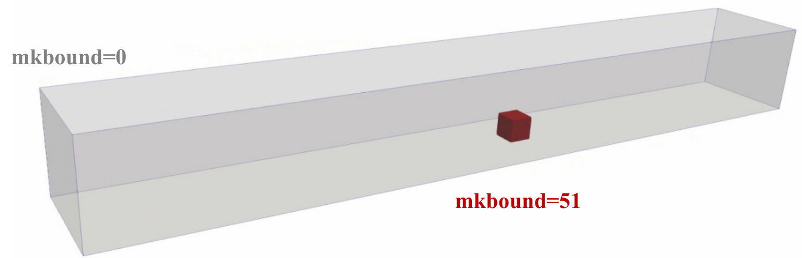
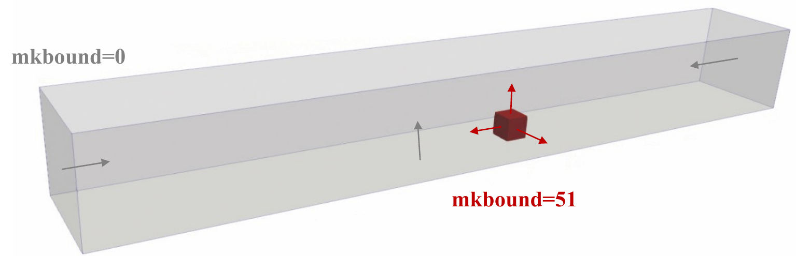
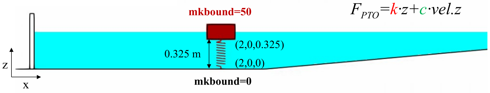
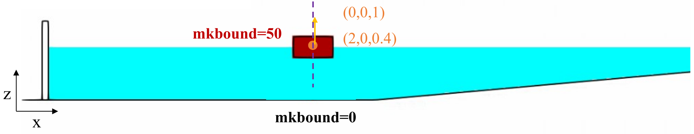
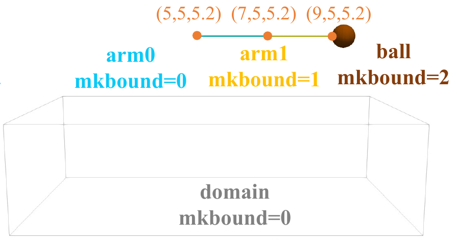
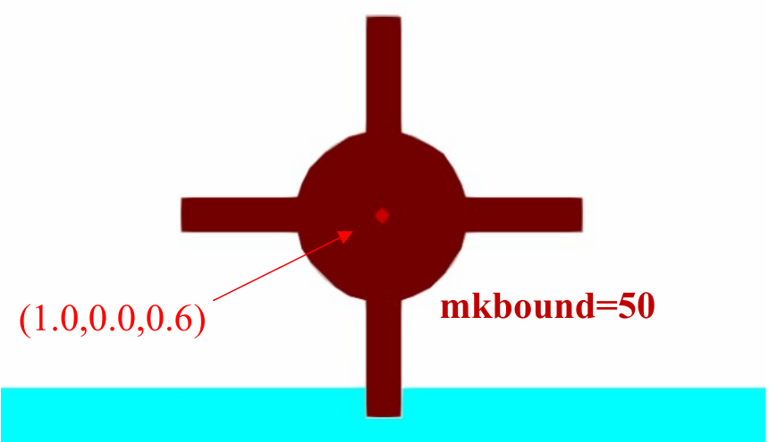
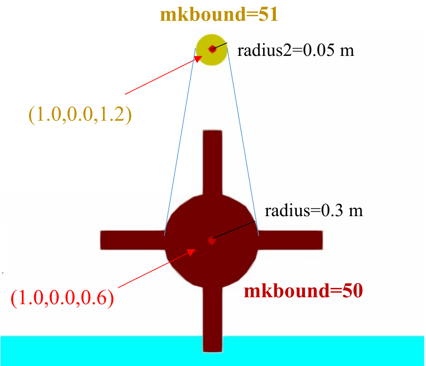

Chrono coupling¶
Under review by Iván Martínez Estévez
XML configuration, collision models and mechanical constraints in DualSPHysics v6.
Introduction¶
The coupling connects DualSPHysics rigid bodies to Project Chrono for contact modelling and mechanical links. Contact modelling controls how bodies collide; links impose connections or apply spring and damping forces. These are separate parts of the XML configuration. The six mechanisms covered here are linear springs, Coulomb damping, sliding joints, spherical joints, hinges and pulleys. They represent the subset described by the original XML Guide, rather than the complete capabilities of Project Chrono.
For coupling theory, see Coupling DualSPHysics with Project Chrono. This page concentrates on configuring the XML.
The XML excerpts below require the surrounding case definitions, geometry, bodies and parameters indicated by their XML locations. Reference-format options are identified separately.
Coupling architecture and model selection¶
DualSPHysics discretises the fluid and boundary geometry into particles, evaluates the fluid dynamics and computes fluid–solid interaction. DSPHChronoLib provides the communication layer between DualSPHysics and Project Chrono. Chrono solves the configured mechanical constraints and solid–solid contacts; its FEA module supplies the structural response when ChronoFEA bodies are present.
For a rigid floating body, DualSPHysics transfers the interaction-derived linear and angular input to the library and obtains the updated centre, linear velocity and angular velocity. The coupling then updates the particle boundary. A mechanical constraint restricts or loads the connected bodies; a contact model resolves collisions. These responsibilities remain distinct even when both act on the same body.
A rigid body retains its shape. A ChronoFEA beam instead has structural nodes and section properties, with a particle representation reconstructed from its deforming beam mesh. The separate TL-SPH Flexible Structures model computes solid dynamics within DualSPHysics using structural particles. Their material definitions and mechanical constraints are not interchangeable.
The selected installation must supply compatible libraries, including FEA support where needed. Upstream Project Chrono capabilities and workshop compilation recipes do not, by themselves, establish that a particular element or actuator is exposed by the current DualSPHysics XML interface.
Activating Chrono¶
The current v6 parameter uses CHR to select Chrono for rigid-body collisions. Place it inside case/execution/parameters:
XML excerpt — activation. XML location: case/execution/parameters. Source: examples/chrono/07_DamBreakCubes/DamBreak1Cube_Def.xml.
<parameter key="RigidAlgorithm" value="CHR" comment="Rigid Algorithm: FREE:collision-free, SPH, DEM, CHR:Chrono collision (default=SPH)"/>
The v6 choices are FREE (collision-free), SPH, DEM and CHR; the documented default is SPH. The presentation's numeric 3 is still accepted by the reader but emits a deprecation warning. Use the named v6 value in new documentation.
The mechanical configuration belongs separately under case/execution/special/chrono. A present chrono section causes the reader to initialise the coupling, subject to Chrono library availability. Do not treat CHR as a universal prerequisite for every link-only configuration: the current examples/chrono/01_Pendulum/CasePendulum_Def.xml uses FREE with spherical links. Conversely, selecting CHR while collisions are disabled produces a warning. Retain the intended collision model of the complete source case.
General settings and body declarations¶
These sibling elements are extracted from the spring point-absorber case. Their parent is its existing chrono element; the complete spring section is shown below under Linear spring.
XML excerpt — general-settings. XML location: case/execution/special/chrono. Source: examples/chrono/10_PointAbsorber/CasePointAbsorberSpring_Def.xml.
<savedata value="0.05" comment="Saves CSV with data exchange for each time interval (0=all steps)"/>
<schemescale value="1" comment="Scale used to create the initial scheme of Chrono objects (default=1)"/>
<bodyfixed id="Bottom" mkbound="0"/>
<bodyfloating id="Floater" mkbound="50"/>
| Element or attribute | Meaning | Units / context |
|---|---|---|
savedata/@value |
CSV exchange-data interval; 0 requests every step; the reader default -1 disables these periodic files |
s for positive intervals |
schemescale/@value |
Scale for the initial Chrono scheme; also used in spring visualisation sizing | Dimensionless; default 1 |
bodyfixed |
Existing fixed boundary associated with a Chrono body | id names the body referenced by links; mkbound identifies the boundary |
bodyfloating |
Existing floating boundary associated with a Chrono body | Physical mass, inertia and degrees of freedom remain part of the case |
bodymoving |
Moving boundary declaration supported by the current format; includes massbody |
Use the relevant complete moving-body case |
idbody1, idbody2 |
References to declared Chrono body IDs | A missing idbody2 connects the applicable link to the world |
Body names are case-sensitive references. A range such as id="arm" mkbound="0-3" creates arm0, arm1, arm2 and arm3; it does not create one body named arm. The mkbound value is a boundary identifier, not the full particle mk value.
An underscore-prefixed entry such as _savedata is inactive. Several current cases retain such entries, so their displayed values must not be described as enabled output settings.
Output files and additional v6 controls¶
The implementation still writes CfgChrono_Scheme.vtk, ChronoBody_forces.csv and ChronoExchange_mkbound_<number>.csv. Names containing a boundary number depend on the configured bodies. Spring representations use SpringVtk/Chrono_Springs_<sequence>.vtk; collision geometry is generated under chrono_objs/. These paths are relative to the configured simulation output directory, whose name need not be Case_out.
ChronoExchange_mkbound_<number>.csv records linear acceleration inputs in m/s², angular acceleration inputs in rad/s² and returned body kinematics. These acceleration columns are not forces in newtons. Body and link force outputs are separate products; confirm their load contributions, coordinate frames and moment references before interpreting a resultant as an impact-force measure.
The current format also documents gravity (default true), ompthreads (default 1) and optional timestepper/substepping. Substepping has off, fixed and auto modes, with maxdt, maxsteps, maxdispdp and maxrot controls. These are additional v6 reference options, not changes to apply automatically to the source cases. Choose their values consistently with the case discretisation and time stepping.
Scaling transferred fluid forces¶
scaleforce is a child of case/execution/special/chrono, containing body entries selected by mkbound. It is not an attribute to add to bodyfloating. The current format describes its coefficients as scaling the transferred fluid force. For constant coefficients, the component-wise interpretation is
The following is a single constant-coefficient alternative from the complete Chrono format. Its boundary identifier must correspond to a body declared in the surrounding case. The values are illustrative, not a general prescription for two-dimensional scaling.
XML excerpt — constant-force-scale. XML location: case/execution/special/chrono/scaleforce. Source: doc/xml_format/_FmtXML_Chrono.xml.
| Attribute | Meaning in this alternative | Value |
|---|---|---|
mkbound |
Existing Chrono body's boundary identifier | 1 |
x |
Factor for the x component | 0.01 |
y |
Factor for the y component | 1 |
z |
Factor for the z component | 1 |
The factors are dimensionless. The reader warns when scaleforce is used outside a 2D simulation. Scaling changes the applied loading and therefore the body response; it is not a visualisation setting or a replacement for mass, inertia, material properties, gravity or contact calibration. The reference identifies fluid-force scaling and does not establish a universal rescaling of every contact, constraint, gravitational force or torque.
The complete format also illustrates time-dependent scale entries and an external file. Those are alternatives requiring their own time series and compatible body selection. The current reader's selection of variable series needs confirmation when several body entries coexist; the constant excerpt above does not establish that such combinations are interchangeable or runtime-validated.
Collision models and configuration¶
For Chrono contact modelling, check three related parts of the complete case: the CHR collision algorithm, contact/material configuration, and the collision geometry attached to each participating body. Defining a mechanical link alone does not enable body contact.
NSC and SMC¶
| Model | contactmethod/@value |
Material quantities checked in the current body-contact configuration |
|---|---|---|
| Non-smooth contact (NSC) | 0 |
Restitution and resolved static/kinetic friction |
| Smooth contact (SMC) | 1 |
Restitution and resolved static/kinetic friction, plus Young's modulus and Poisson's ratio |
The current numbered cases demonstrate both methods: examples/chrono/07_DamBreakCubes/DamBreak1Cube_Def.xml uses active NSC, and examples/chrono/02_Spring/CaseInitialMotionSMC_Def.xml uses active SMC. The latter is a separate two-block spring case; its material and body settings should not be mixed into the dam-break case.
The following NSC configuration preserves the current dam-break body's name cube1, rather than the older slide's cube. The _savedata entry remains inactive.
XML excerpt — collision-nsc. XML location: case/execution/special. Source: examples/chrono/07_DamBreakCubes/DamBreak1Cube_Def.xml.
<chrono>
<_savedata value="0.01" comment="Saves CSV with data exchange for each time interval (0=all steps)"/>
<schemescale value="1" comment="Scale used to create the initial scheme of Chrono objects (default=1)"/>
<collision activate="true">
<distancedp value="0.5" comment="Allowed collision overlap according Dp (default=0.5)"/>
<contactmethod value="0" comment="Contact method type. 0:NSC (Non Smooth Contacts), 1:SMC (SMooth Contacts). (default=0)"/>
</collision>
<bodyfloating id="cube1" mkbound="51" modelfile="AutoActual"/>
<bodyfixed id="tank" mkbound="0" modelfile="AutoActual" modelnormal="invert"/>
</chrono>
For comparison, this is the active collision element in the separate SMC spring case, under its own chrono parent:
XML excerpt — collision-smc. XML location: case/execution/special/chrono. Source: examples/chrono/02_Spring/CaseInitialMotionSMC_Def.xml.
<collision activate="true">
<distancedp value="0.5" comment="Allowed collision overlap according Dp (default=0.5)"/>
<contactmethod value="1" comment="Contact method type. 0:NSC (Non Smooth Contacts), 1:SMC (SMooth Contacts). (default=0)"/>
</collision>
| Item | Meaning | Units / condition |
|---|---|---|
collision/@activate |
Explicitly enables or disables Chrono contact modelling | Boolean; supply the attribute when the element is present |
distancedp/@value |
Allowed overlap expressed as a multiple of particle spacing dp |
Dimensionless; 0.5 corresponds to 0.5 dp |
contactmethod/@value |
Chooses NSC or SMC | 0 or 1 |
modelfile |
Geometry associated with a body for contact modelling | File or supported automatic-generation selector |
modelnormal |
Orientation of collision-model normals | original, invert or twoface in the current reader |
Use activate="false" to disable the collision section explicitly. A method value inside a disabled section is not evidence of active contact modelling. The XML reader requires activate when a collision element is present.
Materials and boundary associations¶
The original illustration identifies a PVC floating cube (mkbound=51) and a steel fixed tank (mkbound=0). The corresponding current case has a floating declaration covering 51–53, while its Chrono collision section declares only cube 51. The range is preserved below; it must not be silently reduced to match the older screenshot.

mkbound=0) and PVC floating body (mkbound=51) used to illustrate the Chrono collision configuration.XML excerpt — floating-material. XML location: case/casedef. Source: examples/chrono/07_DamBreakCubes/DamBreak1Cube_Def.xml.
<floatings>
<floating mkbound="51-53" property="pvc">
<massbody value="2.7"/>
</floating>
</floatings>
XML excerpt — material-associations. XML location: case/casedef. Source: examples/chrono/07_DamBreakCubes/DamBreak1Cube_Def.xml.
<properties>
<propertyfile file="Floating_Materials.xml" path="materials"/>
<links>
<link mkbound="0" property="steel" comment="Property for the tank"/>
</links>
</properties>
The named properties come from Floating_Materials.xml, using its materials path. The sibling file in 07_DamBreakCubes contains these values; they are example-specific material settings, not general recommendations:
| Quantity | XML name | Steel | PVC | Units |
|---|---|---|---|---|
| Young's modulus | Young_Modulus/@value |
210000000000.0 | 3000000000.0 | N/m² |
| Poisson's ratio | PoissonRatio/@value |
0.35 | 0.30 | Dimensionless |
| Restitution coefficient | Restitution_Coefficient/@value |
0.80 | 0.60 | Dimensionless |
| Kinetic friction | Kfric/@value |
0.35 | 0.15 | Dimensionless |
Static friction is an additional v6 consideration absent from the slides' material list. The current loader accepts Sfric; when only one of Kfric and Sfric is provided, it copies that value to the missing coefficient. Thus these source materials, which specify only Kfric, also obtain a static coefficient. Do not invent a separate Sfric value. The format additionally supports Kfric_User, Sfric_User and Restitution_Coefficient_User property overrides.
Collision geometry and normals¶
modelfile="AutoActual" requests generated geometry associated with the body's actual boundary configuration. The current format also documents AutoDp, explicit OBJ/VTK geometry and [CaseName] substitution. Geometry is processed when collisions are active; the absence of a model file leaves that body without an associated contact model in the reference example.
The tank uses modelnormal="invert" so its enclosing surfaces have the intended normal orientation. Inverting the tank is a case-specific choice, not a rule for every fixed body. The original arrows show the distinction between the cube's outer surfaces and the tank's inner contact surfaces.

For the current IDs, generated filenames follow cube1_mkb0051.obj and tank_mkb0000.obj under chrono_objs/; the older slide uses cube_mkb0051.obj because its body ID differs.
The current reference also includes optional NSC rolling/spinning friction, damping and compliance settings, and SMC kn, gn and adhesion. These are alternatives to extend the appropriate model, not instructions to paste all reference blocks together. The reader rejects inconsistent or duplicate NSC/SMC alternatives. Refer to doc/xml_format/_FmtXML_Chrono.xml for their exact syntax; no numerical tuning or undocumented units are introduced here.
Linear spring¶
link_linearspring connects two body attachment points with stiffness and viscous damping. It is useful for a spring-supported float or a restrained body. The point-absorber source connects fixed Bottom (0) and floating Floater (50), initially separated by 0.325 m. Its floating-body definition permits vertical translation and restricts rotations; the link excerpt alone does not impose those degrees of freedom.

The presentation writes the PTO response as
Here k and c denote stiffness and viscous damping, and vel.z denotes vertical velocity in the illustrated motion. The slide does not fully specify the zero of z or whether this is a reaction or applied force. The XML specifies a non-zero equilibrium length. Do not substitute the absolute attachment coordinate into this equation or infer a universal force direction from its plus signs.
This is the source's entire chrono element. It still requires its surrounding case and execution/parameters, including the source's collision choice. It is not a standalone executable case.
XML excerpt — linear-spring. XML location: case/execution/special. Source: examples/chrono/10_PointAbsorber/CasePointAbsorberSpring_Def.xml.
<chrono>
<savedata value="0.05" comment="Saves CSV with data exchange for each time interval (0=all steps)"/>
<schemescale value="1" comment="Scale used to create the initial scheme of Chrono objects (default=1)"/>
<bodyfixed id="Bottom" mkbound="0"/>
<bodyfloating id="Floater" mkbound="50"/>
<link_linearspring idbody1="Bottom" idbody2="Floater">
<point_fb1 x="2.0" y="0.0" z="0.0" comment="Point in body 1"/>
<point_fb2 x="2.0" y="0.0" z="0.325" comment="Point in body 2"/>
<stiffness value="100.0" comment="Stiffness [N/m]"/>
<damping value="500.0" comment="Damping [Ns/m]"/>
<rest_length value="0.325" comment="Spring equilibrium length [m]"/>
<savevtk>
<nside value="16" comment="number of sections for each revolution. 0=not saved, 1=line (default=16)"/>
<radius value="5.0" comment="spring radius (default=3)"/>
<length value="3.0" comment="length for each revolution (default=1)"/>
</savevtk>
</link_linearspring>
</chrono>
| Parameter | Meaning | Units |
|---|---|---|
point_fb1, point_fb2 |
Attachment points associated with body 1 and body 2, supplied at their initial case positions | m |
stiffness/@value |
Linear stiffness, denoted k in the equation |
N/m |
damping/@value |
Linear viscous damping, denoted c |
N·s/m |
rest_length/@value |
Spring equilibrium length | m |
For scalar coefficients the XML tags are stiffness and damping, not k and c. The current format also supports time-dependent <k time="..." value="..."> and <c time="..." value="..."> entries within those parents, or external coefficient files. Those alternatives require their own source data and must not be combined with the scalar excerpt indiscriminately.
Spring VTK visualisation¶
savevtk child |
Meaning in the implementation | Units / qualification |
|---|---|---|
nside |
0: no representation; 1: line; greater than 1: coil |
Integer selector; source comments describe sections per revolution |
radius |
Drawn coil radius factor | Scaled by dp × schemescale; not a physical spring radius in metres |
length |
Drawn revolution-length factor | Scaled by dp × schemescale, with deformation handled by the drawing routine |
The coil representation uses a fixed 28 subdivisions per revolution; nside selects whether to draw nothing, a line or a coil. These settings change the drawing, not the spring stiffness or equilibrium length. The CSV interval and VTK output are separate controls.
Coulomb damping¶
link_coulombdamping connects the same pair of attachment points using a Coulomb force parameter. Unlike the viscous term, whose force depends on speed, the illustrated Coulomb response has a specified magnitude opposing the vertical velocity:
This is the source slide's convention for the illustrated vertical motion. The illustrated expression specifies the force direction for non-zero vertical velocity.
XML excerpt — coulomb-damping. XML location: case/execution/special. Source: examples/chrono/10_PointAbsorber/CasePointAbsorberCoulomb_Def.xml.
<chrono>
<savedata value="0.05" comment="Saves CSV with data exchange for each time interval (0=all steps)"/>
<schemescale value="1" comment="Scale used to create the initial scheme of Chrono objects (default=1)"/>
<bodyfixed id="Bottom" mkbound="0"/>
<bodyfloating id="Floater" mkbound="50"/>
<link_coulombdamping idbody1="Bottom" idbody2="Floater">
<point_fb1 x="2.0" y="0.0" z="0.0" comment="Point in body 1"/>
<point_fb2 x="2.0" y="0.0" z="0.325" comment="Point in body 2"/>
<rest_length value="0.325" comment="Spring equilibrium length [m]"/>
<damping value="10.0" comment="Coulomb force [N]"/>
<savevtk>
<nside value="16" comment="number of sections for each revolution. 0=not saved, 1=line (default=16)"/>
<radius value="5.0" comment="spring radius (default=3)"/>
<length value="3.0" comment="length for each revolution (default=1)"/>
</savevtk>
</link_coulombdamping>
</chrono>
| Parameter | Meaning | Units |
|---|---|---|
point_fb1, point_fb2 |
Initial attachment positions for Bottom and Floater | m |
damping/@value |
Coulomb force magnitude F_b, here 10.0 |
N |
rest_length/@value |
Equilibrium length retained by this link, here 0.325 |
m |
savevtk |
Same visualisation settings as the linear spring | Drawing controls |
Despite the shared name damping, its units here are N, not N·s/m. The source floating-body definition again restricts the motion to vertical translation without rotation. Preserve that context when using the complete case.
Sliding joint¶
link_pointline allows its reference point to slide along a specified direction. Rotation depends on the optional rotation vectors. This is useful when a body must follow a straight guide rather than move freely in three dimensions. The slide specifies global directions; the current point-absorber case uses vertical (0,0,1) and a point (2,0,0.4).

XML excerpt — sliding-joint. XML location: case/execution/special. Source: examples/chrono/10_PointAbsorber/CasePointAbsorberPointLine_Def.xml.
<chrono>
<savedata value="0.05" comment="Saves CSV with data exchange for each time interval (0=all steps)"/>
<schemescale value="1" comment="Scale used to create the initial scheme of Chrono objects (default=1)"/>
<bodyfixed id="Bottom" mkbound="0"/>
<bodyfloating id="Floater" mkbound="50"/>
<link_pointline idbody1="Floater">
<slidingvector x="0" y="0" z="1" comment="Sliding vector direction"/>
<rotpoint x="2" y="0" z="0.4" comment="Sliding point in the body"/>
<rotvector x="0" y="0" z="1" comment="Vector direction for rotation, use (0,0,0) for spheric joint (default=(0,0,0))"/>
<stiffness value="0" comment="Torsional stiffness [Nm/rad]"/>
<damping value="0" comment="Torsional damping [Nms/rad]"/>
</link_pointline>
</chrono>
| Parameter | Meaning | Units |
|---|---|---|
slidingvector |
Direction of the permitted sliding line | Direction vector |
rotpoint |
Initial reference point for the joint | m |
rotvector |
Optional permitted rotation direction; omitted/zero gives the spherical variant in the reference | Direction vector |
rotvector2 |
Optional second direction used to prevent the remaining rotation | Direction vector; read only when rotvector is present |
stiffness, damping |
Torsional coefficients in the documented joint configuration | N·m/rad; N·m·s/rad |
The source's floating-body translation and rotation DOFs are all enabled; the joint supplies the intended restriction. This differs from the separate spring/Coulomb cases' direct DOF restrictions.
The five current inputs under examples/others/ChronoPointline demonstrate omitted rotation vectors, a rotation axis, a second vector, and multiple point-line links. In the format reference, _rotvector and _rotvector2 are disabled illustrations, not active tags. Active variants use the names without underscores.
Spherical joint¶
link_spheric joins bodies at a shared rotation point while allowing spherical rotation. Omitting idbody2 connects body 1 to the world. Multiple links can form an articulated chain; the torsional stiffness and damping remain properties of each link.

The historical diagram shows links at (5,5,5.2), (7,5,5.2) and (9,5,5.2) between arm0 and the world, arm0 and arm1, and arm1 and ball. The current CasePendulum_Def.xml instead defines four arm segments and points along the y direction. Its excerpt below preserves those current coordinates; it does not recreate the diagram's older geometry. Its collision algorithm is FREE, and _savedata is inactive.
XML excerpt — spherical-joint. XML location: case/execution/special. Source: examples/chrono/01_Pendulum/CasePendulum_Def.xml.
<chrono>
<_savedata value="0.02" comment="Saves CSV with data exchange for each time interval (0=all steps)"/>
<schemescale value="1" comment="Scale used to create the initial scheme of Chrono objects (default=1)"/>
<bodyfloating id="arm" mkbound="0-3"/>
<link_spheric idbody1="arm0">
<rotpoint x="5" y="5" z="5" comment="Point for rotation"/>
<stiffness value="0" comment="Torsional stiffness [Nm/rad]"/>
<damping value="0" comment="Torsional damping [Nms/rad]"/>
</link_spheric>
<link_spheric idbody1="arm0" idbody2="arm1">
<rotpoint x="5" y="6" z="5" comment="Point for rotation"/>
<stiffness value="0" comment="Torsional stiffness [Nm/rad]"/>
<damping value="0" comment="Torsional damping [Nms/rad]"/>
</link_spheric>
<link_spheric idbody1="arm1" idbody2="arm2">
<rotpoint x="5" y="7" z="5" comment="Point for rotation"/>
<stiffness value="0" comment="Torsional stiffness [Nm/rad]"/>
<damping value="0" comment="Torsional damping [Nms/rad]"/>
</link_spheric>
<link_spheric idbody1="arm2" idbody2="arm3">
<rotpoint x="5" y="8" z="5" comment="Point for rotation"/>
<stiffness value="0" comment="Torsional stiffness [Nm/rad]"/>
<damping value="0" comment="Torsional damping [Nms/rad]"/>
</link_spheric>
</chrono>
| Parameter | Meaning | Units |
|---|---|---|
idbody1, idbody2 |
Connected body IDs; omitted second body means world | Body references |
rotpoint |
Initial shared rotation point | m |
stiffness/@value |
Torsional stiffness | N·m/rad |
damping/@value |
Torsional damping | N·m·s/rad |
The zero coefficients in this case must not be substituted into other articulated examples as general defaults. See the pendulum catalogue entry for the related family and original videos.
Hinge¶
link_hinge permits rotation around the axis defined by rotpoint and rotvector. With no second body it attaches the wheel to the world. The current wheel case uses the point (1.0,0,0.6) and the y-axis direction (0,1,0).

The presentation gives the torsional response as
θ denotes angular displacement and vel.θ angular velocity in the slide's notation. The positive rotation, reference angle and action/reaction interpretation are not fully defined by the slide. The equation is retained without assigning an unsupported universal torque sign.
These are sibling declarations and the hinge from the current wheel-and-pulley case; its pulley link is shown separately below.
XML excerpt — hinge. XML location: case/execution/special/chrono. Source: examples/chrono/11_CurrentWheelPulley/CaseCurrentWheelPulley_Def.xml.
<bodyfixed id="domain" mkbound="0" modelfile="AutoActual"/>
<bodyfloating id="wheel" mkbound="50" modelfile="AutoActual"/>
<bodyfloating id="gear" mkbound="51" modelfile="AutoActual"/>
<link_hinge idbody1="wheel">
<rotpoint x="1.0" y="0" z="0.6" comment="Point for rotation"/>
<rotvector x="0.0" y="1.0" z="0.0" comment="Vector direction for rotation"/>
<stiffness value="0.0" comment="Torsional stiffness [Nm/rad]"/>
<damping value="0.0" comment="Torsional damping [Nms/rad]"/>
</link_hinge>
| Parameter | Meaning | Units |
|---|---|---|
rotpoint |
Point on the hinge axis | m |
rotvector |
Axis direction | Direction vector |
stiffness/@value |
Torsional stiffness k |
N·m/rad |
damping/@value |
Torsional damping c |
N·m·s/rad |
Both coefficients are 0.0 in this wheel case. Non-zero torsional settings occur in other mechanisms, such as the flexible-gate family; retain their own case values rather than borrowing this wheel's zeros.
Pulley¶
link_pulley couples the rotational motion of the wheel and gear using their specified radii. The current source defines a hinge for wheel before the pulley. The reader explicitly checks this relationship and warns when body 1 has no hinge; the pulley excerpt should not be treated as a replacement for that hinge.

mkbound=50, radius 0.3 m) and gear (mkbound=51, radius 0.05 m).Use the body declarations and hinge from the same source case above. The excerpt retains the current gear-axis coordinates, not the older rounded point in the figure.
XML excerpt — pulley. XML location: case/execution/special/chrono. Source: examples/chrono/11_CurrentWheelPulley/CaseCurrentWheelPulley_Def.xml.
<link_pulley idbody1="wheel" idbody2="gear">
<rotpoint x="1.0025" y="0" z="1.2025" comment="Point for rotation"/>
<rotvector x="0.0" y="1.0" z="0.0" comment="Rotation axis of the body"/>
<radius value="0.3" comment="Radius of idbody1"/>
<radius2 value="0.05" comment="Radius of idbody2"/>
</link_pulley>
| Parameter | Meaning | Units |
|---|---|---|
idbody1, idbody2 |
Wheel and gear body references | IDs; here wheel and gear |
rotpoint |
Rotation-axis point supplied for the pulley body | m |
rotvector |
Rotation-axis direction | Direction vector |
radius/@value |
Radius of body 1, the wheel | m |
radius2/@value |
Radius of body 2, the gear | m |
The source body declarations retain modelfile="AutoActual", but this case has no active collision section. Those attributes alone do not demonstrate enabled contacts.
Related documentation and examples¶
- Coupling DualSPHysics with Project Chrono — coupling theory and background.
- Chrono Examples Catalogue — all numbered Chrono families, descriptions and videos.
- Spring examples — spring-linked bodies, including NSC and SMC cases.
- Project Chrono and its source repository.
For the XML format, see doc/xml_format/_FmtXML_Chrono.xml and doc/xml_format/_FmtXML__Parameters.xml alongside the complete cases cited above. The Chrono format file contains alternative illustrative blocks; it is not a standalone simulation case.
Full Chrono XML format reference¶
The complete Chrono XML format reference is provided below. It documents the configuration structure, available options and supported mechanical constraints. This is a format reference, not a standalone executable simulation case.
doc/xml_format/_FmtXML_Chrono.xml
<?xml version="1.0" encoding="UTF-8" ?>
<!-- *** DualSPHysics [Chrono] v6.0 (16-06-2026) *** -->
<!-- *** class: JChronoObjects *** -->
<!----------------------------------------------------------------------------------->
<!----------------------------------------------------------------------------------->
<!-- *** Example to define the bodies and links using Chrono *** -->
<casedef>
<!-- Define body materials -->
<!-- Floating bodies -->
<floatings>
<floating mkbound="1" relativeweight="1.0" property="pvc" comment="Property for the floating bound" />
<floating mkbound="2" relativeweight="1.2" property="pvc+SetKfric" comment="Property for the floating bound" />
<floating mkbound="3" relativeweight="1.2" property="pvc+SetSfric" comment="Property for the floating bound" />
<floating mkbound="4" relativeweight="1.0" property="pvc+SetResCoeff" comment="Property for the floating bound" />
</floatings>
<properties>
<propertyfile file="Floating_Materials.xml" path="materials" />
<!-- Fixed bodies -->
<links>
<link mkbound="0" property="pvc" comment="Property for the fixed bound" />
</links>
<!-- The values Kfric_User, Sfric_User and Restitution_Coefficient_User -->
<!-- replace to Kfric, Sfric and Restitution_Coefficient values in -->
<!-- Floating_Materials.xml -->
<property name="SetKfric" Kfric_User="0.1234" />
<property name="SetSfric" Sfric_User="0.1234" />
<property name="SetResCoeff" Restitution_Coefficient_User="0.4321" />
</properties>
</casedef>
<!----------------------------------------------------------------------------------->
<!----------------------------------------------------------------------------------->
<!-- *** Special section to define the Chrono's setup *** -->
<execution>
<special>
<chrono>
<savedata value="-1" comment="Saves CSV with data exchange for each time interval (0=all steps)" />
<schemescale value="1" comment="Scale used to create the initial scheme of Chrono objects (default=1)" />
<gravity value="true" comment="Use gravity acceleration in Chrono (default=true)" />
<ompthreads value="1" comment="Number of Chrono OpenMP threads (default=1)" />
<!-- Optional Chrono internal substepping. -->
<timestepper>
<substepping mode="off" comment="off|fixed|auto. When off, one Chrono step is used per DualSPHysics step.">
<maxdt value="0" comment="Maximum internal Chrono dt. 0 uses DualSPHysics dt." />
<maxsteps value="1" comment="Maximum Chrono substeps per DualSPHysics step." />
<maxdispdp value="0" comment="Adaptive limit based on body displacement / dp. 0 disables it." />
<maxrot value="0" comment="Adaptive limit based on body rotation [rad]. 0 disables it." />
</substepping>
</timestepper>
<!-- Enable collisions for chrono -->
<collision activate="true">
<distancedp value="0.5" comment="Allowed collision overlap according Dp (default=0.5)" />
<contactmethod value="0" comment="Contact method type. 0:NSC, 1:SMC."/>
</collision>
<!-- Disable collisions for chrono -->
<collision activate="false" />
<!-- Define the bodies for Chrono -->
<bodyfixed id="domain" mkbound="0" modelfile="domain.obj" /> <!-- Link a mesh file to enable contact modelling -->
<bodymoving id="piston" mkbound="10" massbody="10" modelfile="piston.vtk" />
<bodyfloating id="box1" mkbound="1" modelfile="box.obj" />
<bodyfloating id="box2" mkbound="2"/> <!-- Don't link a mesh file to disable contact modelling -->
<bodyfloating id="box3" mkbound="3"/>
<bodyfloating id="box4" mkbound="4"/>
<bodyfloating id="box5" mkbound="5"/>
<!-- Define the restrictions between bodies -->
<!-- Spring between two bodies -->
<link_linearspring idbody1="domain" idbody2="box1">
<point_fb1 x="1.0" y="1.0" z="1.0" comment="Point in body 1" />
<point_fb2 x="2.0" y="2.0" z="2.0" comment="Point in body 2" />
<stiffness value="1000" comment="Stiffness [N/m]" />
<damping value="100" comment="Damping [Ns/m]" />
<rest_length value="5.0" comment="Spring equilibrium length [m]" />
<savevtk>
<nside value="16" comment="number of sections for each revolution. 0=not saved, 1=line (default=16)" />
<radius value="3" comment="spring radius (default=3)" />
<length value="1" comment="length for each revolution (default=1)" />
</savevtk>
</link_linearspring>
<!-- Spring with variable stiffness and damping along time -->
<link_linearspring idbody1="domain" idbody2="box1">
<point_fb1 x="1.0" y="1.0" z="1.0" comment="Point in body 1" />
<point_fb2 x="2.0" y="2.0" z="2.0" comment="Point in body 2" />
<damping comment="Damping [Ns/m]"> <!-- Variable Damping -->
<c time="0" value="0"/>
<c time="5" value="0"/>
<c time="5" value="500"/>
<c time="10" value="500"/>
</damping>
<stiffness comment="Stiffness [N/m]"> <!-- Variable Stiffness -->
<k time="0" value="0"/>
<k time="5" value="0"/>
<k time="5" value="100"/>
<k time="10" value="100"/>
</stiffness>
<rest_length value="5.0" comment="Spring equilibrium length [m]" />
</link_linearspring>
<!-- Spring with variable stiffness and damping along time from external file -->
<link_linearspring idbody1="domain" idbody2="box1">
<point_fb1 x="1.0" y="1.0" z="1.0" comment="Point in body 1" />
<point_fb2 x="2.0" y="2.0" z="2.0" comment="Point in body 2" />
<damping file="CaseExternalDamping.csv" comment="Damping [Ns/m]"/> <!-- Variable Damping from external file -->
<stiffness file="CaseExternalStiffness.csv" comment="Stiffness [N/m]"/> <!-- Variable Stiffness from external file -->
<rest_length value="5.0" comment="Spring equilibrium length [m]" />
</link_linearspring>
<!-- Coulomb Damping bewteen two bodies -->
<link_coulombdamping idbody1="domain" idbody2="box1">
<point_fb1 x="1.0" y="1.0" z="1.0" comment="Point in body 1" />
<point_fb2 x="2.0" y="2.0" z="2.0" comment="Point in body 2" />
<rest_length value="5.0" comment="Spring equilibrium length [m]" />
<damping value="100" comment="Coulomb force [N]" />
<savevtk>
<nside value="16" comment="number of sections for each revolution. 0=not saved, 1=line (default=16)" />
<radius value="3" comment="spring radius (default=3)" />
<length value="1" comment="length for each revolution (default=1)" />
</savevtk>
</link_coulombdamping>
<!-- Hinge between two bodies -->
<link_hinge idbody1="box1" idbody2="box2">
<rotpoint x="1.0" y="1.0" z="1.0" comment="Point for rotation" />
<rotvector x="0" y="1" z="0" comment="Vector direction for rotation" />
<stiffness value="500" comment="Torsional stiffness [Nm/rad]" />
<damping value="10" comment="Torsional damping [Nms/rad]" />
</link_hinge>
<!-- Spheric joint between two bodies -->
<link_spheric idbody1="box2" idbody2="box3">
<rotpoint x="3.0" y="3.0" z="3.0" comment="Point for rotation" />
<stiffness value="20" comment="Torsional stiffness [Nm/rad]" />
<damping value="10" comment="Torsional damping [Nms/rad]" />
</link_spheric>
<!-- Define restrictions of a body to absolute space -->
<!-- Spheric joint or modified joint by rotvector and rotvector2 that can slide along an axis -->
<link_pointline idbody1="box4">
<slidingvector x="0" y="1" z="0" comment="Sliding vector direction" />
<rotpoint x="4.0" y="0" z="4.0" comment="Sliding point in the body" />
<_rotvector x="0" y="1" z="0" comment="Vector direction for rotation, use (0,0,0) for spheric joint (default=(0,0,0))" />
<_rotvector2 x="0" y="0" z="1" comment="Second vector to avoid rotation (default=(0,0,0))" />
<stiffness value="400" comment="Torsional stiffness [Nm/rad]" />
<damping value="50" comment="Torsional damping [Nms/rad]" />
</link_pointline>
<link_pointline idbody1="box4" idbody2="box5">
<slidingvector x="0" y="1" z="0" comment="Sliding vector direction" />
<rotpoint x="4.0" y="0" z="4.0" comment="Sliding point in the body" />
<_rotvector x="0" y="1" z="0" comment="Vector direction for rotation, use (0,0,0) for spheric joint (default=(0,0,0))" />
<_rotvector2 x="0" y="0" z="1" comment="Second vector to avoid rotation (default=(0,0,0))" />
<stiffness value="400" comment="Torsional stiffness [Nm/rad]" />
<damping value="50" comment="Torsional damping [Nms/rad]" />
</link_pointline>
<link_spheric idbody1="box5">
<rotpoint x="5.0" y="5.0" z="5.0" comment="Point for rotation" />
<stiffness value="20" comment="Torsional stiffness [Nm/rad]" />
<damping value="10" comment="Torsional damping [Nms/rad]" />
</link_spheric>
<link_pulley idbody1="box1" idbody2="box5">
<rotpoint x="1.0" y="0" z="1.2" comment="Point for rotation" />
<rotvector x="0.0" y="1.0" z="0.0" comment="Rotation axis of the body" />
<radius value="0.3" comment="Radius of idbody1"/>
<radius2 value="0.05" comment="Radius of idbody2"/>
</link_pulley>
</chrono>
</special>
</execution>
<!----------------------------------------------------------------------------------->
<!----------------------------------------------------------------------------------->
<!-- *** Alternative Chrono collision definitions *** -->
<!-- Use contactmethod value 0 for NSC or value 1 for SMC. -->
<chrono>
<collision activate="true">
<distancedp value="0.5" comment="Allowed collision overlap according Dp (default=0.5)" />
<!-- NSC -->
<contactmethod value="0" comment="Contact method type. 0:NSC, 1:SMC.">
<rollingfriction value="0" comment="NSC rolling friction." />
<spinningfriction value="0" comment="NSC spinning friction." />
<dampingf value="0" comment="NSC damping factor." />
<compliance value="0" comment="NSC normal compliance." />
<compliancet value="0" comment="NSC tangential compliance." />
<compliancerolling value="0" comment="NSC rolling compliance." />
<compliancespinning value="0" comment="NSC spinning compliance." />
</contactmethod>
<!-- SMC -->
<contactmethod value="1" comment="Contact method type. 0:NSC, 1:SMC.">
<kn value="1.0e6" comment="SMC normal stiffness." />
<gn value="100" comment="SMC normal damping." />
<adhesion value="0" comment="SMC adhesion." />
</contactmethod>
</collision>
</chrono>
<!----------------------------------------------------------------------------------->
<!----------------------------------------------------------------------------------->
<!-- *** Examples of defining the geometry of objects *** -->
<!-- Note that geometry definition is only necessary when Chrono manages -->
<!-- collisions between boundary objects (fixed, moving or floating). -->
<chrono>
<savedata value="0.02" comment="Saves CSV with data exchange for each time interval (0=all steps)" />
<!-- Geometry files (OBJ or VTK files) is defined by "modelfile". -->
<bodyfloating id="box1" mkbound="1" modelfile="box.obj" />
<!-- [CaseName] is replaced by case name in DualSPHysics execution. -->
<bodyfloating id="ball" mkbound="4" modelfile="[CaseName]_WreckingBall_Actual.vtk" />
<!-- Several objects can be defined in one line using a list of mkbound values. -->
<!-- The geometry used by each object is according the mk of each object when -->
<!-- the VTK file includes information about mk. -->
<bodyfloating id="box" mkbound="51-66,80,82" modelfile="[CaseName]_Boxes_Actual.vtk" />
<!-- modelfile="AutoActual" or modelfile="AutoDp" can be used to assign the geometry -->
<!-- automatically from the VTK files generated by GenCase v4.0.074 (or higher). -->
<bodyfloating id="box" mkbound="51-66,80,82" modelfile="AutoActual" />
<!-- The normals of geometry can be changed using modelnormal="invert". -->
<!-- The value of modelnormal is "original" by default. The use of "invert" inverts -->
<!-- the normal ones. And "twoface" creates normals in both directions but this -->
<!-- option may effect the results of the simulation. -->
<bodyfixed id="domain" mkbound="10" modelfile="AutoActual" modelnormal="invert" />
</chrono>
<!-- ***=============================================================*** -->
<!-- ***=============================================================*** -->
<!-- *** Attribute "scaleforce" in bodyfloating elements to enable *** -->
<!-- *** the use of a coefficient to scale the forces of each object.*** -->
<!-- *** The scale factor will be multipled by the fluid force *** -->
<chrono active="true">
<scaleforce>
<body mkbound="1" x="0.01" y="1" z="1" comment="Scale forces in all directions."/>
<body mkbound="2-4" x="0.02" y="1" z="1" comment="Scale forces in all directions."/>
<body mkbound="5" file="ScaleForce.csv" comment="Scale forces in all directions."/>
<body mkbound="5" comment="Scale forces in all directions.">
<scale time="0" x="0.01" y="1" z="1"/>
<scale time="5" x="0.5" y="1" z="1"/>
<scale time="5" x="0.8" y="1" z="1"/>
<scale time="10" x="1" y="1" z="0.5"/>
</body>
</scaleforce>
</chrono>
<!-- ***=======================================================================*** -->
<!-- ***=======================================================================*** -->
<!-- *** Attribute "active" in chrono, bodyXXX and link_XXX elements to enable *** -->
<!-- *** (using active="true" or active="1") or disable (using active="false" *** -->
<!-- *** or active="0"). It is an optional attribute and true by default. *** -->
<chrono active="true">
<bodyfixed active="true"/>
<bodyfloating active="true"/>
<link_linearspring active="true"/>
<link_coulombdamping active="true"/>
<link_hinge active="true"/>
<link_pointline active="true"/>
<link_spheric active="true"/>
<link_pulley active="true"/>
</chrono>
<!-- ***============================================================================*** -->
<!-- ***============================================================================*** -->
<!-- *** Attribute "imposefric" in bodyXXX elements to impose its kfric value when *** -->
<!-- *** this body collides with other (using imposefric="true" or imposefric="1") *** -->
<!-- *** or disable (using imposefric="false" or imposefric="0"). It is an optional *** -->
<!-- *** attribute and false by default. *** -->
<chrono>
<bodyfixed id="domain" mkbound="10" modelfile="AutoActual" modelnormal="invert" imposefric="true" />
<bodyfloating id="box" mkbound="51" modelfile="AutoActual" imposefric="true" />
</chrono>